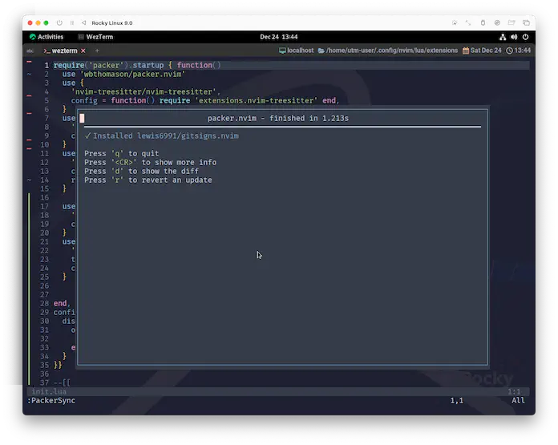
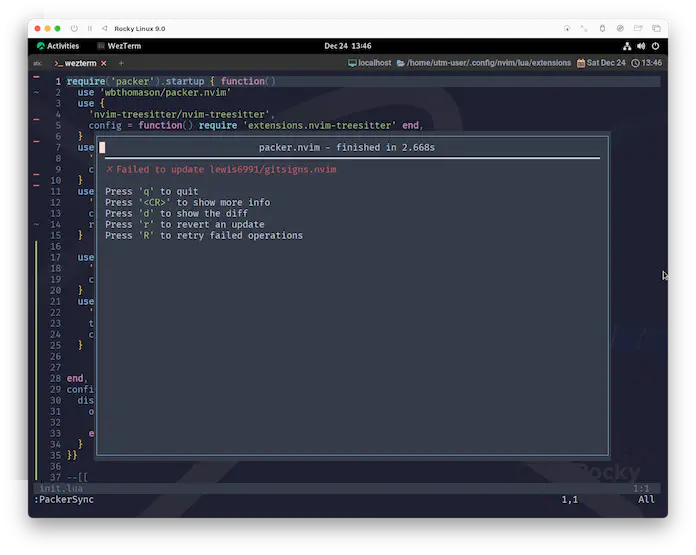
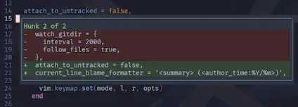
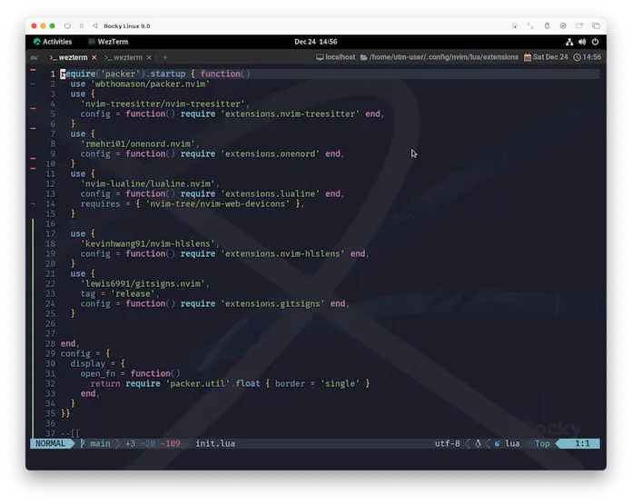
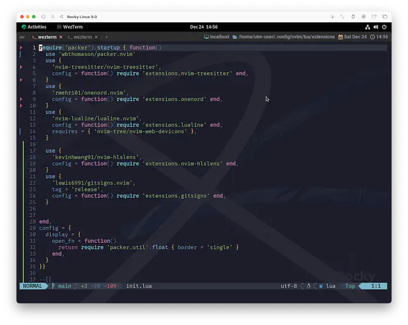
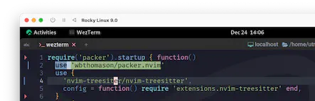
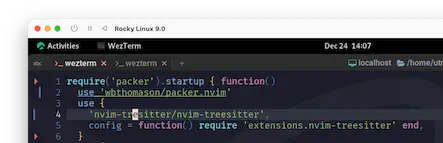

gitsigns.nvim
今回はgitsigns.nvimです。
人によってはgitを使っていないかもしれないんだけど、これをきっかけに挑戦してみると楽しいと思います。
Super fast git decorations implemented purely in lua/teal.
lua/teal でピュアに実装された超高速な git 装飾。
だよねー。もう Christmas🎄 だもんねー😆 華やかな "装飾" を施していきましょう❗
Neovim >= 0.7.0
Note: If your version of Neovim is too old, then you can use a past release.
Neovimのバージョンが古すぎる場合、過去のリリースを使用することができます。
Note: If you are running a development version of Neovim (aka master), then breakage may occur if your build is behind latest.
Neovimの開発版(別名master)を使っている場合、ビルドが最新より遅れていると破損する可能性があります。
Newish version of git. Older versions may not work with some features.
gitの新しいバージョン。古いバージョンでは、一部の機能が動作しない可能性があります。
Neovimもgitも、「stable releaseをあえて外している😑」 とかしてなければ気にしなくて平気です。
Installation
もう意地でも聖夜🌃に間に合わせます。gitsignsに負けないくらい超高速でいきましょう😆
今回は色々カスタマイズしていきたいので、 まずはUsageに示されているデフォルトセッティングを入れておくことにしましょう。
これを基に、あとでカスタマイズしていきます。
require('gitsigns').setup {
signs = {
add = { hl = 'GitSignsAdd' , text = '│', numhl='GitSignsAddNr' , linehl='GitSignsAddLn' },
change = { hl = 'GitSignsChange', text = '│', numhl='GitSignsChangeNr', linehl='GitSignsChangeLn' },
delete = { hl = 'GitSignsDelete', text = '_', numhl='GitSignsDeleteNr', linehl='GitSignsDeleteLn' },
topdelete = { hl = 'GitSignsDelete', text = '‾', numhl='GitSignsDeleteNr', linehl='GitSignsDeleteLn' },
changedelete = { hl = 'GitSignsChange', text = '~', numhl='GitSignsChangeNr', linehl='GitSignsChangeLn' },
untracked = { hl = 'GitSignsAdd' , text = '┆', numhl='GitSignsAddNr' , linehl='GitSignsAddLn' },
},
signcolumn = true, -- Toggle with `:Gitsigns toggle_signs`
numhl = false, -- Toggle with `:Gitsigns toggle_numhl`
linehl = false, -- Toggle with `:Gitsigns toggle_linehl`
word_diff = false, -- Toggle with `:Gitsigns toggle_word_diff`
watch_gitdir = {
interval = 1000,
follow_files = true
},
attach_to_untracked = true,
current_line_blame = false, -- Toggle with `:Gitsigns toggle_current_line_blame`
current_line_blame_opts = {
virt_text = true,
virt_text_pos = 'eol', -- 'eol' | 'overlay' | 'right_align'
delay = 1000,
ignore_whitespace = false,
},
current_line_blame_formatter = '<author>, <author_time:%Y-%m-%d> - <summary>',
sign_priority = 6,
update_debounce = 100,
status_formatter = nil, -- Use default
max_file_length = 40000, -- Disable if file is longer than this (in lines)
preview_config = {
-- Options passed to nvim_open_win
border = 'single',
style = 'minimal',
relative = 'cursor',
row = 0,
col = 1
},
yadm = {
enable = false
},
}
use {
'lewis6991/gitsigns.nvim',
-- tag = 'release',
config = function() require 'extensions.gitsigns' end,
}
ってことで、もうすっかりお馴染みの:PackerSync😆

もしgitの管理下に居たのなら、もうこの時点でsigincolumnに装飾🎄がされてますね❗yeah!! 🍾
フライングで登場していたsigncolumn からここまでに2ヶ月かかりました...。
まあなんか、やってやったぜってな感じはあります☺️
Neovimのnightlyビルドや開発ビルドを実行している場合は、tagオプションを使用しないでください!
(Stable Releaseを使用している場合は入れてね!) ...と記載されているのですが、
なぜかアップデート確認(次回以降の:PackerSync)で失敗します。

これはpackerの問題なのかな...。ごめんなさい、今ちょっと高速なんで、また今度確認してみます😣
あ、上の例では既にコメントアウトしてます。
Keymaps
カスタマイズに入る前に、キーマップも入れておきましょう。
キーマップはデフォルトでは有効になっていないようなので、 これもKeymapsからそのまま貼り付けちゃいます。
Gitsigns provides an on_attach callback which can be used to setup buffer mappings.
Gitsigns は on_attach コールバックを提供し、buffer マッピングの設定に使用することができます。
-- require('gitsigns').setup {
-- setup の中にペーストします。
on_attach = function(bufnr)
local gs = package.loaded.gitsigns
local function map(mode, l, r, opts)
opts = opts or {}
opts.buffer = bufnr
vim.keymap.set(mode, l, r, opts)
end
-- Navigation
map('n', ']c', function()
if vim.wo.diff then return ']c' end
vim.schedule(function() gs.next_hunk() end)
return '<Ignore>'
end, {expr=true})
map('n', '[c', function()
if vim.wo.diff then return '[c' end
vim.schedule(function() gs.prev_hunk() end)
return '<Ignore>'
end, {expr=true})
-- Actions
map({'n', 'v'}, '<leader>hs', ':Gitsigns stage_hunk<CR>')
map({'n', 'v'}, '<leader>hr', ':Gitsigns reset_hunk<CR>')
map('n', '<leader>hS', gs.stage_buffer)
map('n', '<leader>hu', gs.undo_stage_hunk)
map('n', '<leader>hR', gs.reset_buffer)
map('n', '<leader>hp', gs.preview_hunk)
map('n', '<leader>hb', function() gs.blame_line{full=true} end)
map('n', '<leader>tb', gs.toggle_current_line_blame)
map('n', '<leader>hd', gs.diffthis)
map('n', '<leader>hD', function() gs.diffthis('~') end)
map('n', '<leader>td', gs.toggle_deleted)
-- Text object
map({'o', 'x'}, 'ih', ':<C-U>Gitsigns select_hunk<CR>')
end
-- }
もう結構luaにも見慣れてきたんじゃないでしょうか❓
「on_attachと言われても...」、という感じには多少なるものの、map()がvim.keymap.set()に繋いでくれてるのは、まあなんか分かりますよね😉
パラメータもほぼそのままなので、カスタマイズをしたい場合はmap()を追加・変更していけば良さそうです。
使用できる機能は以下で説明されています。
Note functions with the {async} attribute are run asynchronously and are
non-blocking (return immediately).
{async} 属性を持つ関数は、非同期で実行され、ノンブロッキング（即座に戻る）であることに注意してください。
キーマップにはあらかじめ機能が割り当てられていて、「こんな色々できるんだぁ☺️」とサプライズ満載なので、ぜひ色々試してみてください。
preview_hunkとかちょっとした時に便利😉

Config
手始めに、装飾を少しアレンジしてみます。
もちろん、このままがいい❗って場合はスキップしちゃって構いません。デフォルトでも全然イケてるプラグインです😆
signs
ここは表示するtextだけ変えてます。
untrackedについては、後に出てくるattach_to_untrackedを無効にすると使用されないので定義していません。
signs = {
add = { hl = 'GitSignsAdd', text = ' ▎', numhl = 'GitSignsAddNr', linehl = 'GitSignsAddLn' },
change = { hl = 'GitSignsChange', text = ' ▎', numhl = 'GitSignsChangeNr', linehl = 'GitSignsChangeLn' },
delete = { hl = 'GitSignsDelete', text = ' ', numhl = 'GitSignsDeleteNr', linehl = 'GitSignsDeleteLn' },
topdelete = { hl = 'GitSignsDelete', text = ' ', numhl = 'GitSignsDeleteNr', linehl = 'GitSignsDeleteLn' },
changedelete = { hl = 'GitSignsChange', text = '▎ ', numhl = 'GitSignsChangeNr', linehl = 'GitSignsChangeLn' },
},
| before | after |
|---|---|
|  |  |
word_diff
word_diff gitsigns-config-word_diff
Type: `boolean`, Default: `false`
Highlight intra-line word differences in the buffer.
バッファ内の行内の単語の相違をハイライトします。
Requires `config.diff_opts.internal = true` .
Uses the highlights:
• For word diff in previews:
• `GitSignsAddInline`
• `GitSignsChangeInline`
• `GitSignsDeleteInline`
• For word diff in buffer:
• `GitSignsAddLnInline`
• `GitSignsChangeLnInline`
• `GitSignsDeleteLnInline`
• For word diff in virtual lines (e.g. show_deleted):
• `GitSignsAddVirtLnInline`
• `GitSignsChangeVirtLnInline`
• `GitSignsDeleteVirtLnInline`
word_diffを有効にすると、単語単位で差分が検出されます。

...ちょっと派手すぎません❗❓
何十人も集まるようなパーティーであれば、このぐらい盛り上がってくれれば、それはもう大変に開き甲斐のあるパーティーです🥳
でも、普段使いで❓これを❗❓いや〜...、それはなにかこう、特別な勇気が必要になってくるような...。
なので、もうちょっと抑えたいなーと思うんですけど...🤔
そういえば:h gitsigns-config-word_diffの中で、これに関して使用しているhighlightsが示されてますよね。
highlightsといえば心強い味方が既にいました❗onenord.nvimです😆
extensions/onenord.luaを引っ張り出してきて、以下を追記してみましょう。
custom_highlights = {
MatchParen = { fg = colors.none, bg = colors.none, style = 'bold,underline' },
-- ここに追記する
GitSignsAddLnInline = { fg = colors.none, bg = colors.none, style = 'underline' },
GitSignsChangeLnInline = { fg = colors.none, bg = colors.none, style = 'underline' },
GitSignsDeleteLnInline = { fg = colors.purple, bg = colors.none, style = 'bold,underline' },
},

ありがとう...❗onenord...❗
attach_to_untracked
これは、わたしが今の今まで気づいていなかったんですが...。
attach_to_untracked *gitsigns-config-attach_to_untracked*
Type: `boolean`, Default: `true`
Attach to untracked files.
未追跡のファイルにアタッチする。
ちゃんとアタッチを無効にするオプションありました😮
signcolumnでこれを知らなくて、
numberオプションを"クセつよ"呼ばわりしてたんですが、わたしが無知なだけでした...。
ほんとごめんなさい😭
current_line_blame_formatter
わたし自身はそんなにうまく活用できてないんですが、これはちょっと面白いやつです。
current_line_blame_formatter gitsigns-config-current_line_blame_formatter
Type: `string|function`, Default: `' <author>, <author_time> - <summary>'`
String or function used to format the virtual text of
|gitsigns-config-current_line_blame|.
仮想テキストをフォーマットするために使用される文字列または関数。
When a string, accepts the following format specifiers:
文字列の場合、以下のフォーマット指定子を受け付けます。
フォーマット指定子については量が多いので手元で確認してもらうとして、
デフォルトでcurrent_line_brameを有効化するかどうかは、以下のパラメータです。
current_line_blame gitsigns-config-current_line_blame
Type: `boolean`, Default: `false`
Adds an unobtrusive and customisable blame annotation at the end of
the current line.
現在の行の末尾に、目立たずカスタマイズ可能な注釈を追加します。
The highlight group used for the text is `GitSignsCurrentLineBlame`.
デフォルトでは有効になっていないのですが、キーマップをそのまま持ってきているなら以下のコードが入っているはずです。
map('n', '<leader>tb', gs.toggle_current_line_blame)
leadertbとしてみましょう。
変更箇所に持っていくとあら不思議😮
| before |
|---|
 |
| after |
|---|
 |
summaryが表示されました😆
これだとちょっと見にくいな〜と思ったら、またonenord.luaにGitSignsCurrentLineBlameを追加して好きなように変えられます。
まとめ
賑やかな装飾を施せましたね❗サンタさんも大喜びです🎅